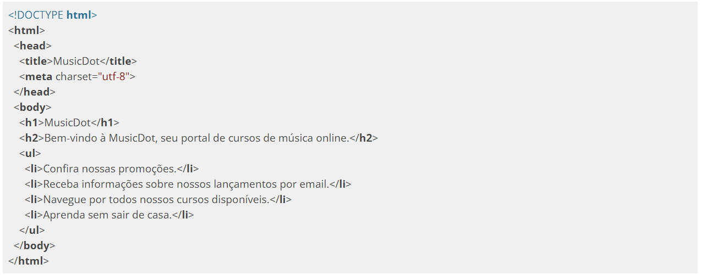

A única linguagem que um navegador Web consegue interpretar para a exibição de conteúdo é o HTML. Para iniciar a exploração do HTML, vamos imaginar o seguinte caso: o navegador realizou uma requisição e recebeu como corpo da resposta o seguinte conteúdo:
Salve o arquivo como index.html e abra-o a partir do navegador à sua escolha.
Parece que obtemos um resultado um pouco diferente do esperado, não? Apesar de ser capaz de exibir texto puro em sua área principal, algumas regras devem ser seguidas caso desejemos que esse texto seja exibido com alguma formatação, para facilitar a leitura pelo usuário final.
Uma nota de atenção é que a imagem acima foi tirada dos navegadores: Microsoft Edge e Microsoft Internet Explorer 11. Veja o que acontece quando obtemos a mesma imagem porém com navegadores mais atuais:
A imagem acima foi tirada nos navegadores: Brave, Mozilla Firefox e Google Chrome.
Usando os resultados acima podemos concluir que os navegadores mais antigos e até mesmo o Microsoft Edge por padrão:
Podem não exibir caracteres acentuados corretamente;
Mas até mesmo nos navegadores mais novos:
Não exibem quebras de linha.
Para que possamos exibir as informações desejadas com a formatação, é necessário que cada trecho de texto tenha uma marcação indicando qual é o significado dele.

O texto com as devidas marcações, comumente chamado de "código". Reproduza então o código anterior em um novo arquivo de texto puro e salve-o como index-2.html
Agora, uma página muito mais agradável e legível é exibida. Para isso, tivemos que adicionar as marcações que são pertencentes ao HTML. Essas marcações são chamadas de tags, e elas basicamente dão uma representação ao texto contido entre sua abertura e fechamento.
O HTML (Hypertext Markup Language) ou linguagem de marcação de hipertexto foi desenvolvido para suprir a necessidade exibição de documentos científicos fornecidos por uma rede de Internet. Para termos uma comparação, é como se a Web fosse desenvolvida para exibir monografias redigidas e formatadas pela Metodologia do Trabalho Científico da ABNT.
O HTML é um conjunto de tags responsáveis pela marcação do conteúdo de uma página no navegador. No código que vimos antes, as tags são os elementos a mais que escrevemos usando a sintaxe <nomedatag>.
No código de antes, vimos por exemplo o uso da tag <h1>. Ela representa o título principal da página.
Note a sintaxe. Uma tag é definida com caracteres < e >, e seu nome (h1 no caso). Nesse caso, para determinar onde o conteúdo acaba, usamos uma tag de fechamento com a barra antes do nome: </h1>
Algumas tags podem receber algum tipo de informação extra dentro de sua definição chamada de atributo. São parâmetros usando a sintaxe de atributo="valor". Para definir uma imagem, por exemplo, usamos a tag <img> e, para indicar o caminho que está essa imagem, usamos o atributo src:
Repare que a tag img não possui conteúdo por si só, e sim ela carrega ali o conteúdo de um arquivo externo (a imagem). Nesses casos, não é necessário usar uma tag de fechamento como antes no h1.